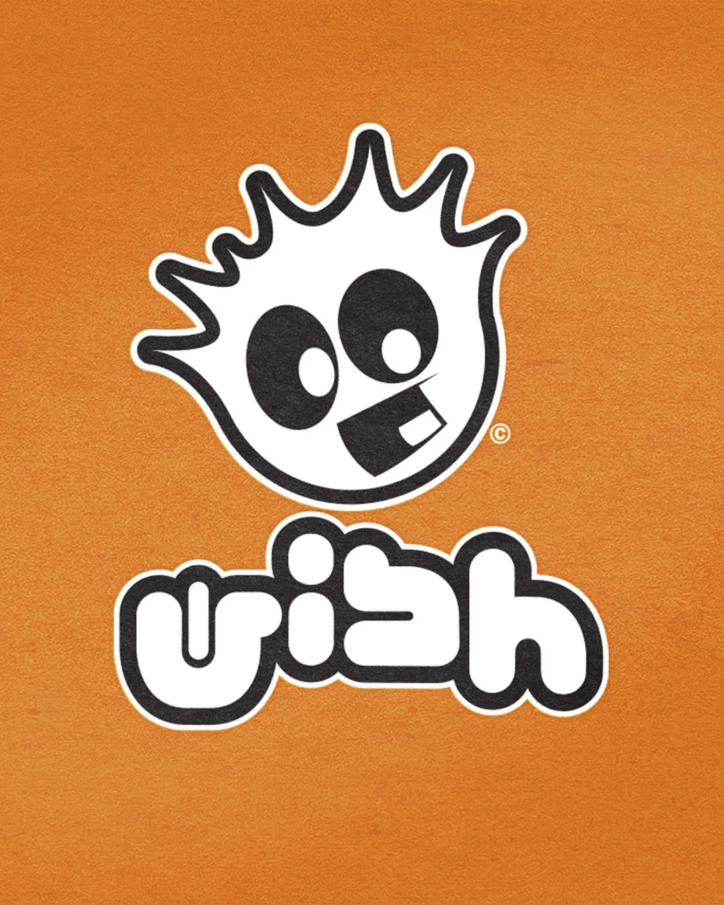
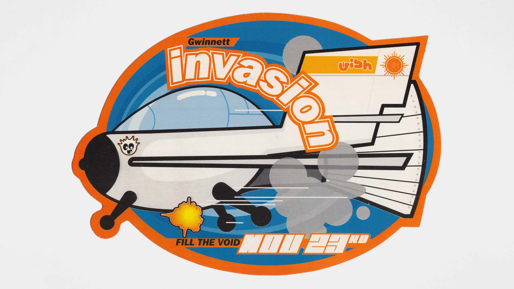
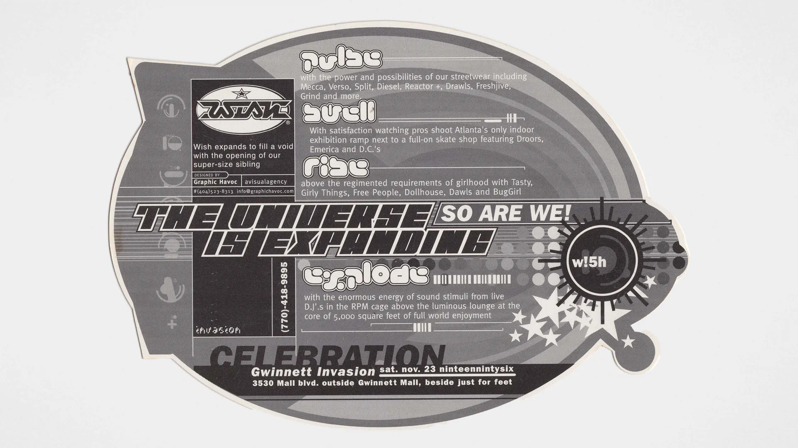
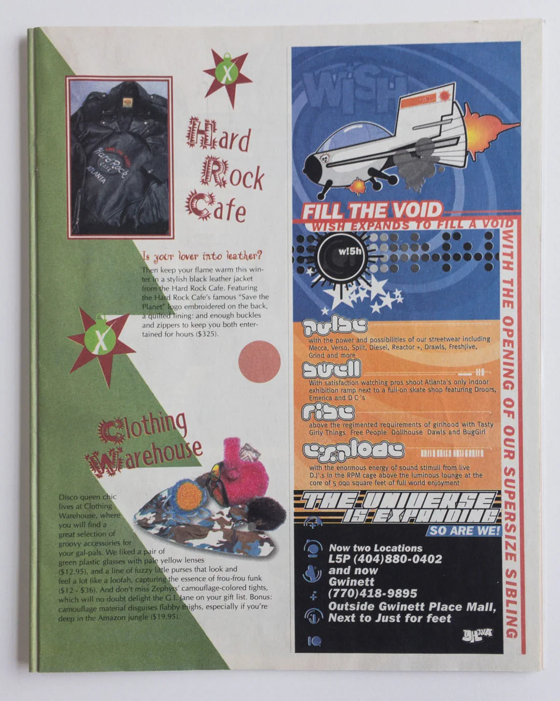
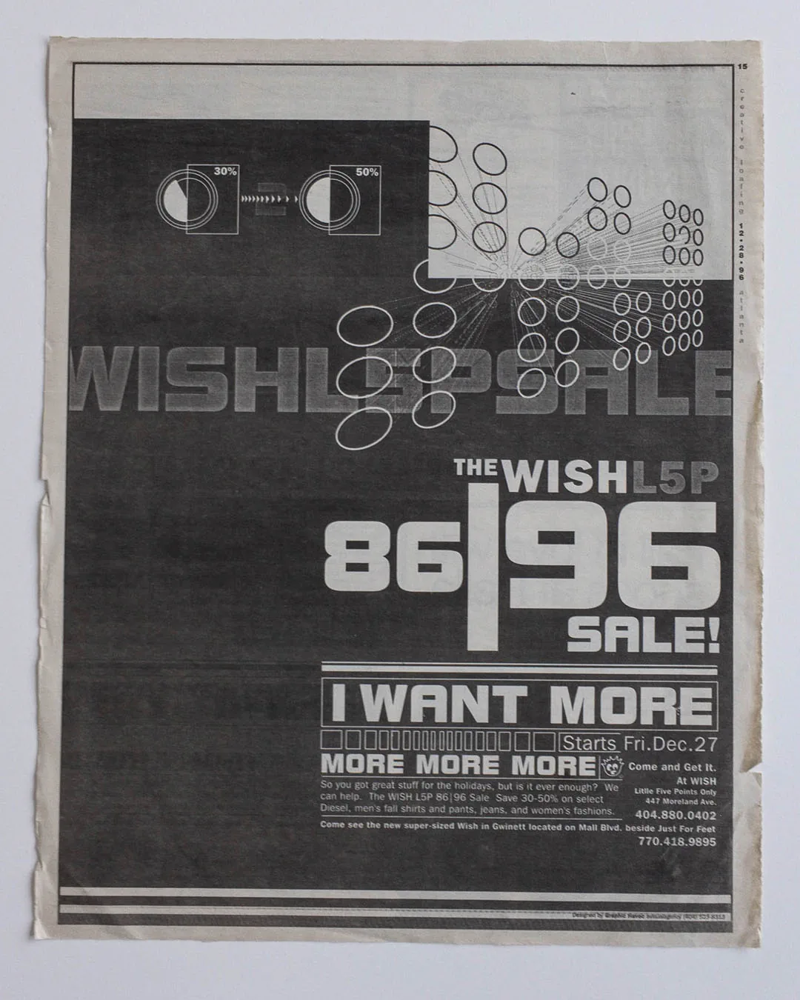
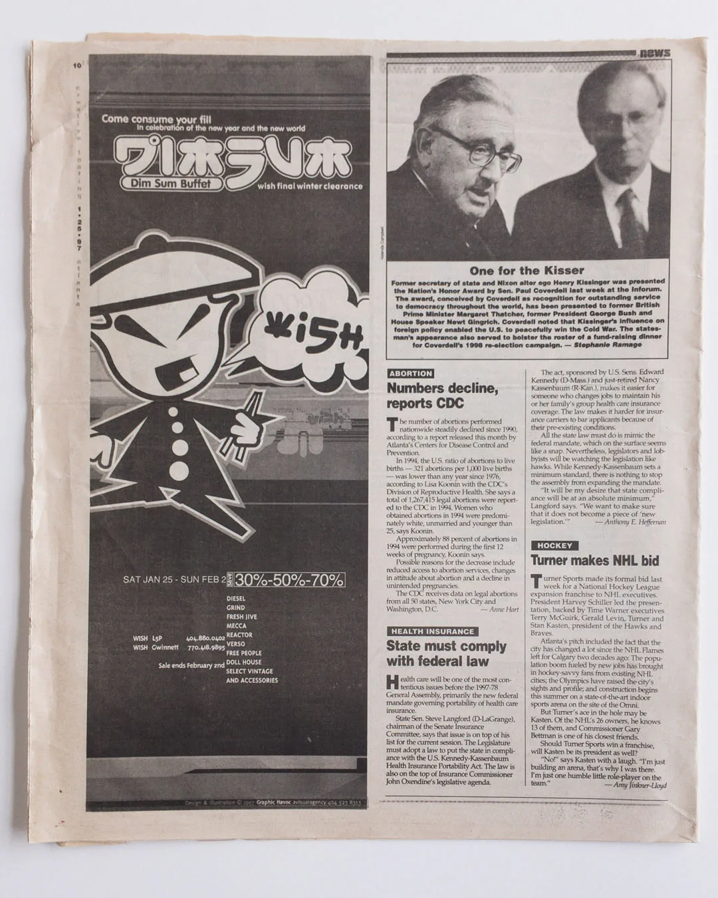
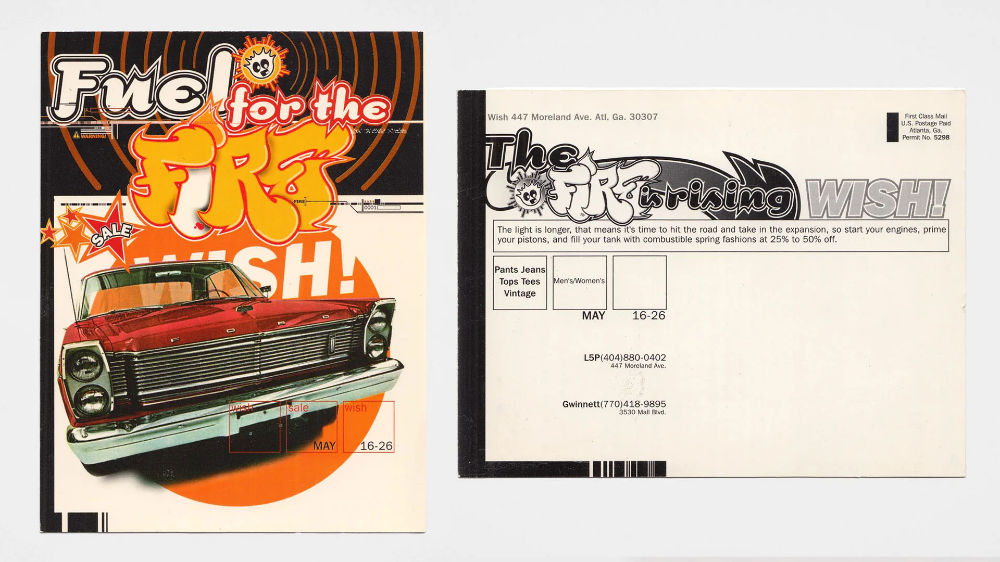
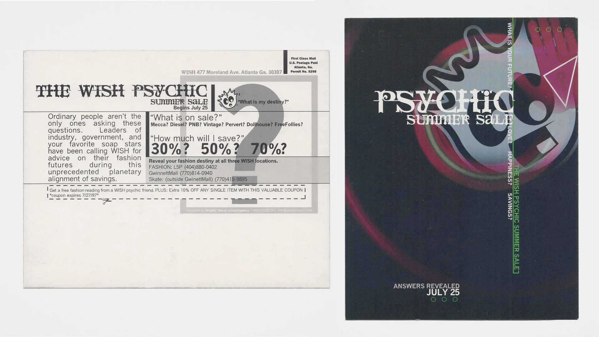
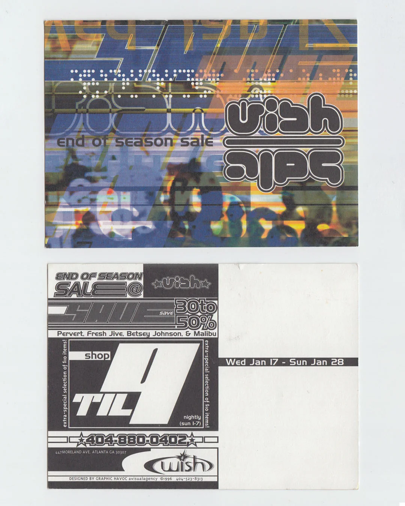
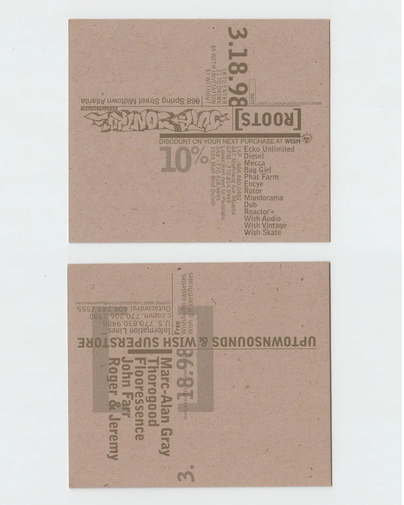

WISH
WISH was never intended to feel like a conventional fashion boutique. From its beginnings in Atlanta's Little Five Points, WISH brought together fashion, music, art, and street culture in a distinctly alternative retail environment.
GRAPHIC HAVOC developed WISH's logo, mascot, and identity system, extending them across marketing, advertising, promotional materials, signage, and retail interiors, including wall supergraphics and cash-wrap designs. The recognizable character and wordmark provided a consistent foundation for a wide range of graphic expressions as WISH expanded beyond its original location.




Expanding Beyond Little Five Points
The 1996 "Gwinnett Invasion" promotion announced WISH's expansion to a second Atlanta-area location. Its "Fill the Void" concept connected the opening to the boutique's mix of streetwear, skate culture, fashion, and music.


Advertising and Promotion
WISH's advertising and promotional pieces moved between bold typography, character illustration, automotive references, and layered imagery while retaining the identity's irreverent personality. Newspaper advertisements and direct-mail promotions communicated seasonal sales and special events across the Little Five Points and Gwinnett stores.



